sous-bois · eco
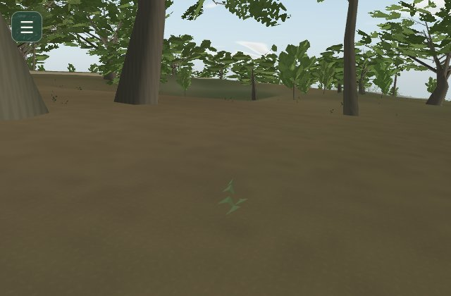
MISSION 19MISSION 20Station fixe de la matrice, même caméra, date et météo.
sous-bois · balanced
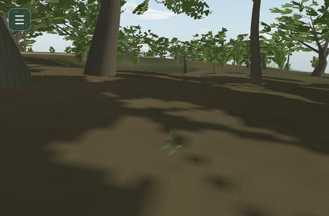
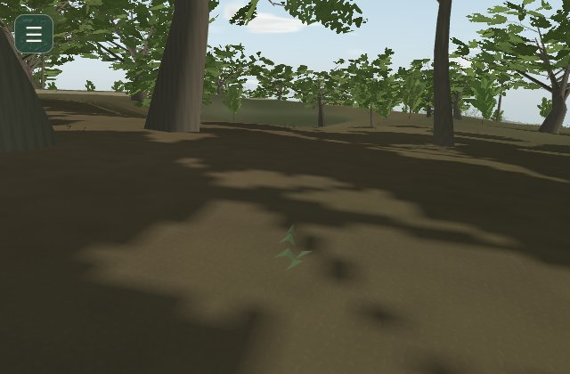
MISSION 19MISSION 20Station fixe de la matrice, même caméra, date et météo.
sous-bois · quality
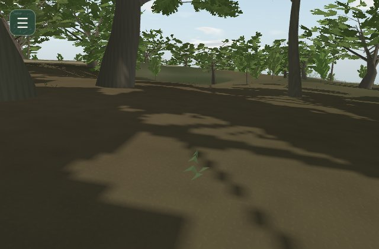
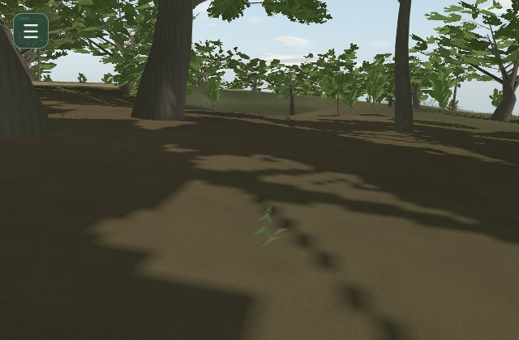
MISSION 19MISSION 20Station fixe de la matrice, même caméra, date et météo.
rue · eco
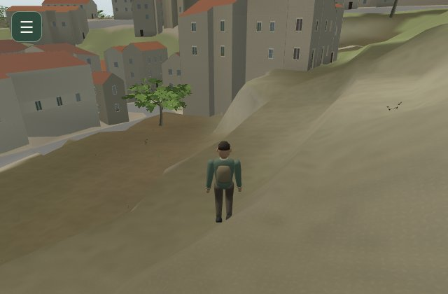
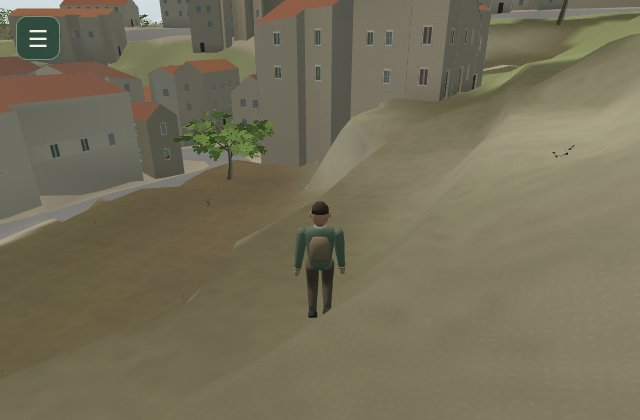
MISSION 19MISSION 20Station fixe de la matrice, même caméra, date et météo.
rue · balanced
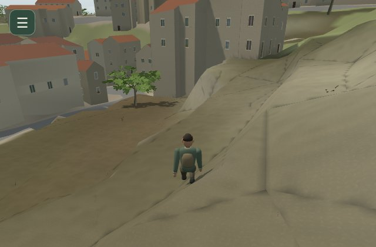
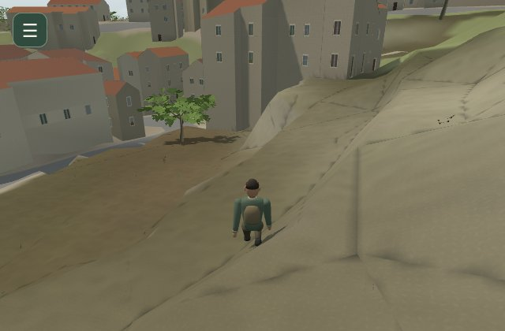
MISSION 19MISSION 20Station fixe de la matrice, même caméra, date et météo.
rue · quality
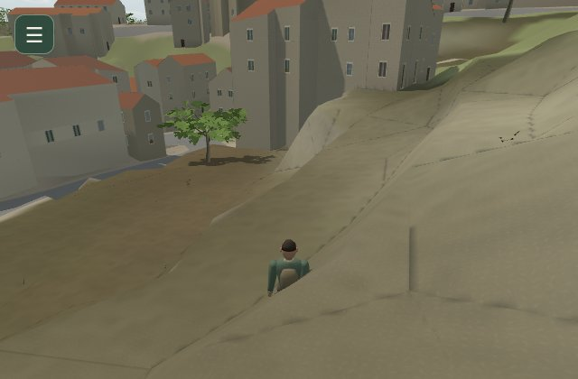
MISSION 19MISSION 20Station fixe de la matrice, même caméra, date et météo.
vallee · eco
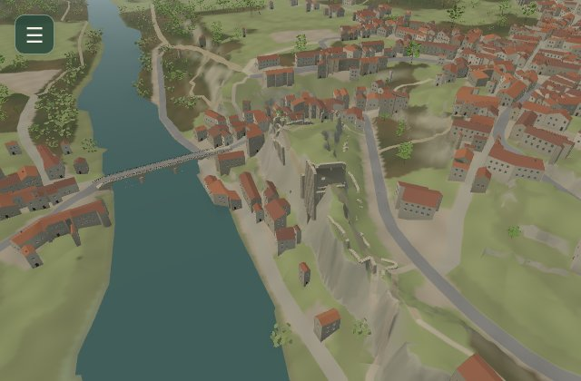
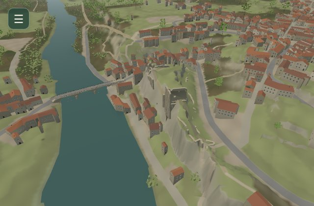
MISSION 19MISSION 20Station fixe de la matrice, même caméra, date et météo.
vallee · balanced
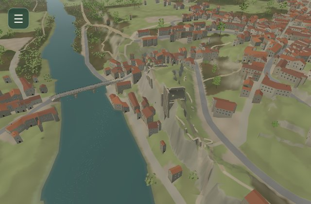
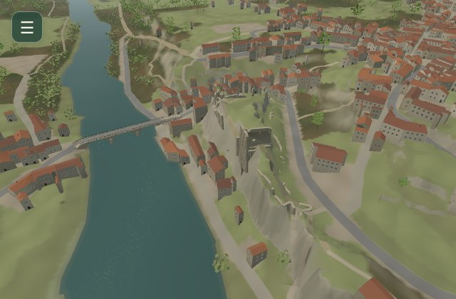
MISSION 19MISSION 20Station fixe de la matrice, même caméra, date et météo.
vallee · quality
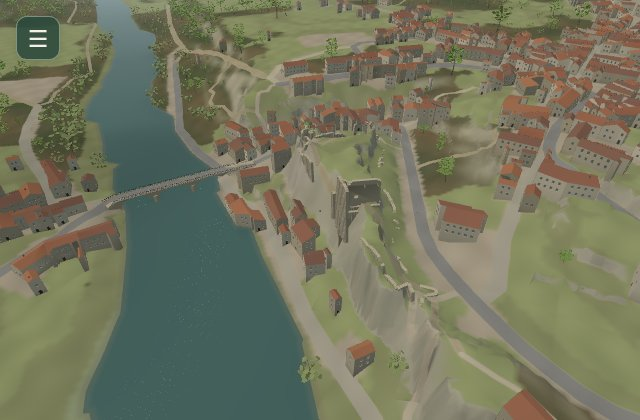
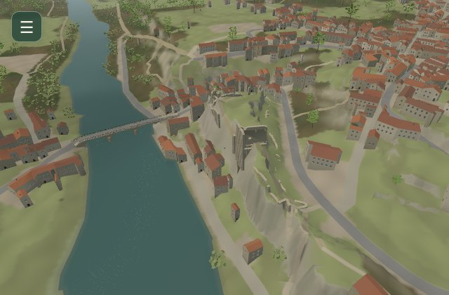
MISSION 19MISSION 20Station fixe de la matrice, même caméra, date et météo.